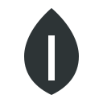
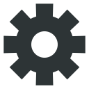

Hub chrome — header i footer
Jedan univerzalan chrome za svih 5 swipe stranica. Artboard 1080×1920 px, sve mjere u px te baze — prenos 1:1 u Godot. Dva smjera su 1a i 1b; sve ispod njih je isporuka za preporučeni smjer.
- Tijelo trake nosi kontrast prema svim svijetlim stranicama (8,9–15,0:1) — nijedna sezonska nijansa Home polja ga ne može dostići.
- Pastelni chipovi su svijetli po prirodi: na tamnoj traci sami postaju kontrast (6,4–9,0:1 s tamnim ciframa), bez debelog outlinea.
- Hub pozadina je već
#1F2B24— traka se stapa sa safe areom, nema tamne „rupe“ iznad notcha. - Smjer A na Journalu ima traku iste boje kao stranica; odvaja ih samo tvrda linija — čita se kao šav, ne kao okvir.
Radi na tamnim stranicama i formalno prolazi na svijetlim (rub 5,1:1), ali chipovi se od trake odvajaju samo borderom (1,3:1) pa traže tvrd outline, a 323 px svijetlog chroma se bori s pastelnom ilustracijom stranice.
Tijelo trake nosi svijetle stranice, svijetli rub od 3 px nosi tamne (4,2–4,9:1). Chipovi u bojama valuta pale se na tamnom, a peach je slobodan za jedinu CTA ulogu — aktivan tab.
Spec sheet — Header
Separator hiljada do 6 cifara, kompakt (1.2M) tek od 7. Coins i seeds su potrošni resursi — igrač mora znati ima li dovoljno, a 12.4K skriva 400 novčića. 999,999 na 48 px staje u 186 od 190 px slota.
Spec sheet — Footer
Peach ispuna (9,5:1 prema traci — jasna i u grayscale-u) · puna visina tile-a naspram praznih susjeda · obrnut ink (tamno na svijetlom umjesto svijetlo na tamnom) · ActiveIndicator na gornjem rubu. Zaključano stanje ostavlja aktivan tab čitljivim da igrač ne izgubi orijentaciju.
Šest ekrana — isti chrome, svih 5 stranica
Bez safe area, da se vide čiste mjere trake. Sadržaj stranica nije dizajniran — puna pozadinska boja i sivi placeholder blokovi.
Edge case
Alternativa 12.4K od 5 cifara je odbačena: skriva stotine u resursu koji se troši. Ako se ekonomija ipak popne preko milion, kompakt se uključuje samo tada i broj ostaje u istom slotu.
Površina trake se produžava u notch (0–100 px) i gesture bar (0–60 px); sadržaj ostaje u 140 / 180 px. Kako je chrome iste familije kao hub pozadina #1F2B24, prelaz je nevidljiv čak i ako se safe area promijeni na uređaju.
Ikone — SVG, jednobojne, tintljive iz koda
viewBox 128 × 128, jedna boja #2D3436, bez strokea u geometriji osim u ručki torbe i kvačici katanca. Svijetle varijante (_light) su isti fajl u #FFF8F0 — u Godotu nisu potrebne, tint ide iz koda.
novi asset
chrome silueta

chrome silueta

Coin i seed u chromeu su siluete, ne gameplay art: boja valute je već u ispuni chipa, pa druga boja u ikoni samo smanjuje čitljivost na 56 px. Postojeći coin.png (plav) i seed.png (narandžast) ostaju za pickupe u runu — nisu u paleti i ne pripadaju chromeu.
Slojevi → Godot
Sve je StyleBoxFlat: ravna boja, radius, border 2 px, jedna drop sjena. Bez blura, gradijenata i maski. Nove konstante za ui_palette.gd: chrome_deep #1A241E (tamnija varijanta #1F2B24), peach_deep #E8A374 (tamnija varijanta #FFB88C).
Van zadatka — ideje, nisu u mockupu
- Tap na chip → Shop: ne bih. Chip je informacija; kad postane put do kupovine, Pillar 2 se tiho krivi. Ako baš treba, samo diamond chip.
- Count-up broja (0,25 s tween + scale 1,0→1,08→1,0 na ikoni) na promjenu vrijednosti — jedina animacija koju predlažem u headeru.
- Badge i za Camp kad je daily spreman: slot je generički, boja ostaje
#FFCCD5da badge nikad ne znači „akcija“ nego „novo“. - Nunito za cijelu igru, ne samo chrome — cifre su mu ujednačene i tabular varijanta radi u Godot Labelu.
- Gumeni otpor na krajevima mogao bi dobiti vizuelni odjek: ActiveIndicator se rastegne za 8 px pri Shop/Arena ivici.